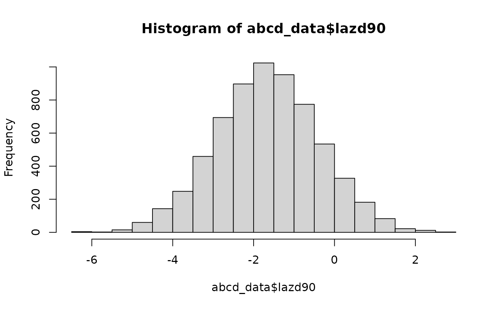

Simulated data from AntiBiotics for Children with severe Diarrhea (ABCD) trial
Source:R/abcd_data.R
abcd_data.RdSimulated dataset based closely on real data from ABCD trial with 40 covariates and n = 6692 observations. The outcome variable is length-for-age z-score at day 90 of the trial (laz90) and the treatment variable is azithromycin (an_grp_01). Details on the distribution of each variable can be found in *cite paper?*
Usage
data(abcd_data)Format
An object of class "data.frame"
- pid
Participant identification number
- an_grp_01
Binary indicator for azithromycin (antibiotic) treatment, 1=assigned azithromycin, 0=assigned placebo
- rotavirus_new
Relative quantity of rotavirus in stool sample based on log-10 transformed qPCR cycle threshold values
- rotavirus_bin
Binary indicator for rotavirus presence in stool sample (1=rotavirus detected, 0=rotavirus not detected)
- norovirus_new
Relative quantity of norovirus in stool sample based on log-10 transformed qPCR cycle threshold values
- norovirus_bin
Binary indicator for norovirus presence in stool sample (1=norovirus detected, 0=norovirus not detected)
- adenovirus_new
Relative quantity of adenovirus in stool sample based on log-10 transformed qPCR cycle threshold values
- adenovirus_bin
Binary indicator for adenovirus presence in stool sample (1=adenovirus detected, 0=adenovirus not detected)
- astrovirus_new
Relative quantity of astrovirus in stool sample based on log-10 transformed qPCR cycle threshold values
- astrovirus_bin
Binary indicator for astrovirus presence in stool sample (1=astrovirus detected, 0=astrovirus not detected)
- sapovirus_new
Relative quantity of sapovirus in stool sample based on log-10 transformed qPCR cycle threshold values
- sapovirus_bin
Binary indicator for sapovirus presence in stool sample (1=sapovirus detected, 0=sapovirus not detected)
- st_etec_new
Relative quantity of st_etec in stool sample based on log-10 transformed qPCR cycle threshold values
- st_etec_bin
Binary indicator for st_etec presence in stool sample (1=st_etec detected, 0=st_etec not detected)
- shigella_new
Relative quantity of shigella in stool sample based on log-10 transformed qPCR cycle threshold values
- shigella_bin
Binary indicator for shigella presence in stool sample (1=shigella detected, 0=shigella not detected)
- campylobacter_new
Relative quantity of campylobacter in stool sample based on log-10 transformed qPCR cycle threshold values
- campylobacter_bin
Binary indicator for campylobacter presence in stool sample (1=campylobacter detected, 0=campylobacter not detected)
- tepec_new
Relative quantity of tepec in stool sample based on log-10 transformed qPCR cycle threshold values
- tepec_bin
Binary indicator for tepec presence in stool sample (1=tepec detected, 0=tepec not detected)
- v_cholerae_new
Relative quantity of v_cholerae in stool sample based on log-10 transformed qPCR cycle threshold values
- v_cholerae_bin
Binary indicator for v_cholerae presence in stool sample (1=v_cholerae detected, 0=v_cholerae not detected)
- salmonella_new
Relative quantity of salmonella in stool sample based on log-10 transformed qPCR cycle threshold values
- salmonella_bin
Binary indicator for salmonella presence in stool sample (1=salmonella detected, 0=salmonella not detected)
- cryptosporidium_new
Relative quantity of cryptosporidium in stool sample based on log-10 transformed qPCR cycle threshold values
- cryptosporidium_bin
Binary indicator for cryptosporidium presence in stool sample (1=cryptosporidium detected, 0=cryptosporidium not detected)
- dy1_scrn_vomitall
Factor with two levels for vomiting at screening ("No" = not vomit, "Yes" = vomit)
- dy1_scrn_lstools
Number of loose stools in 24 hours prior to enrollment (continuous)
- dy1_scrn_sstools
Number of solid stools in 24 hours prior to enrollment (continuous)
- dy1_scrn_diardays
Duration (days) of diarrhea illness prior to enrollment (continuous)
- dy1_scrn_dehydr
Dehydration status at screening (ordinal, 1 = "No dehydration", 2 = "Some dehydration", 3 = "Severe dehydration")
- avemuac
Middle upper arm circumference (continuous)
- wfazscore
Weight for age z-score (continuous)
- lfazscore
Length for age z-score (continuous)
- wflzscore
Weight for length z-score (continuous)
- site
Study site (nominal, 2 = Bangladesh, 3 = Kenya, 4 = Malawi, 5 = Mali, 6 = India, 7 = Tanzania, 8 = Pakistan)
- dy1_ant_sex
Sex (1 = Male, 2 = Female)
- agemchild
Age (in months) (continuous)
- an_ses_quintile
SES quintile (ordinal, 1 = 1st quintile, 2 = 2nd quintile, 3 = 3rd quintile, 4 = 4th quintile, 5 = 5th quintile)
- an_tothhlt5
Number of children under age 5 years in household (continuous)
- rotaseason
Binary indicator for enrollment during rotavirus season (1 = enrolled during rotavirus season, 0 = not enrolled during rotavirus season)
- month_en
Month enrolled (1-12 correspond to January-December)
- lazd90
Length for age z-score at day 90 post-enrollment
Examples
data(abcd_data)
head(abcd_data)
#> # A tibble: 6 × 43
#> pid an_grp_01 rotavirus_new norovirus_new adenovirus_new astrovirus_new
#> <dbl> <dbl> <dbl> <dbl> <dbl> <dbl>
#> 1 1 0 0 0 0 0
#> 2 2 0 0 0 0 0
#> 3 3 0 0 0 0 0
#> 4 4 0 0 4.30 1.41 0
#> 5 5 1 0 0 0 0
#> 6 6 1 0 0 4.61 0
#> # ℹ 37 more variables: sapovirus_new <dbl>, st_etec_new <dbl>,
#> # shigella_new <dbl>, campylobacter_new <dbl>, tepec_new <dbl>,
#> # v_cholerae_new <dbl>, salmonella_new <dbl>, cryptosporidium_new <dbl>,
#> # rotavirus_bin <dbl>, norovirus_bin <dbl>, adenovirus_bin <dbl>,
#> # astrovirus_bin <dbl>, sapovirus_bin <dbl>, st_etec_bin <dbl>,
#> # shigella_bin <dbl>, campylobacter_bin <dbl>, tepec_bin <dbl>,
#> # v_cholerae_bin <dbl>, salmonella_bin <dbl>, cryptosporidium_bin <dbl>, …
hist(abcd_data$lazd90)
